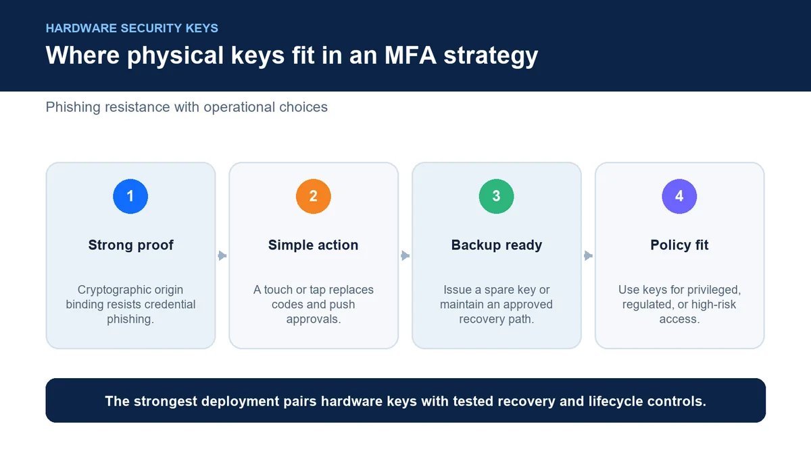
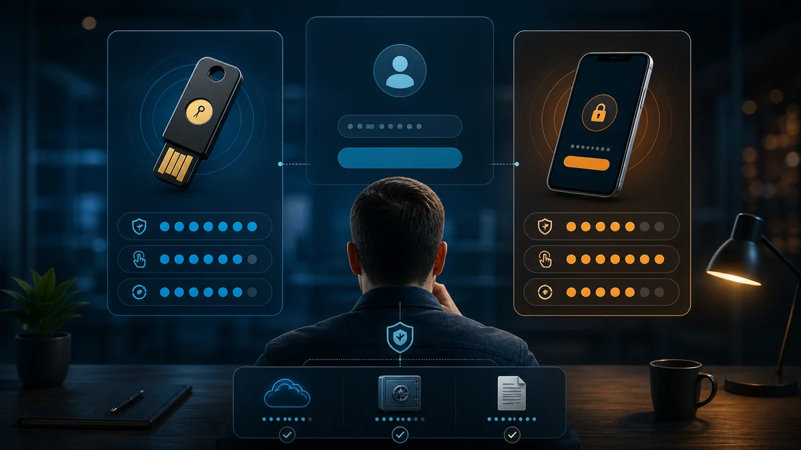
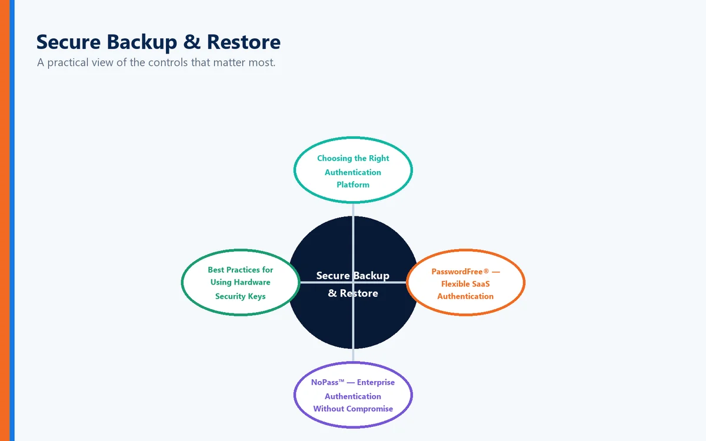

As organizations continue moving toward stronger authentication, many users are asking an increasingly important question:
"Do I really need an authenticator app, or can I simply use a hardware security key?"
The answer is:
Yes—and for many organizations, a hardware security key is actually one of the strongest forms of Multi-Factor Authentication (MFA) available.
Physical security keys provide phishing-resistant authentication, eliminate many of the frustrations associated with mobile authenticator apps, and offer a secure alternative for organizations that want stronger identity protection without relying exclusively on smartphones.
Even better, modern passwordless authentication platforms can integrate hardware security keys into a broader authentication strategy that emphasizes security, business continuity, and user productivity.
What Is Full Duplex Authentication® (FDA)?
Full Duplex Authentication® (FDA) is the patented authentication technology powering PasswordFree®, Identité's Software-as-a-Service (SaaS) authentication platform, and NoPass™, its enterprise Platform-as-a-Service (PaaS) solution. Rather than layering additional authentication factors onto passwords, FDA securely validates both the user and the trusted device through a unified, passwordless authentication process.
Authentication powered by FDA is designed for both cybersecurity and business continuity. In addition to passwordless authentication, organizations can enable Emergency PIN Authentication and Secure Backup & Restore, allowing users to quickly recover authentication profiles when devices are lost or replaced—often in less than two minutes.
FDA also supports industry-standard hardware security keys, including third-party devices such as YubiKey®, giving organizations the flexibility to choose authentication methods that best align with their security policies and operational requirements.
What Is a Hardware Security Key?
A hardware security key is a small physical device used to verify your identity during authentication.
Instead of entering a one-time code from a mobile application, users simply:
Insert the key into a USB port
Tap an NFC-enabled security key against a mobile device
Connect via USB-C, Lightning, or other supported interfaces
Verify authentication with a touch or PIN, depending on configuration
The key securely proves the user's identity without requiring SMS messages or authenticator applications.
Popular examples include:
YubiKey®
Feitian security keys
Google Titan Security Key
Other FIDO2 and WebAuthn-compatible authenticators
Because PasswordFree® and NoPass™ are designed around open authentication standards, organizations can integrate compatible third-party hardware keys, including YubiKey®, into their authentication strategy while leveraging the additional capabilities of Full Duplex Authentication®.
Why Are Hardware Keys More Secure?
Unlike SMS messages or authenticator apps, hardware security keys perform cryptographic authentication directly between the user's device and the application.
This provides several important security advantages.
Phishing Resistance
Traditional MFA often asks users to:
Enter passwords
Type one-time codes
Approve push notifications
Attackers can sometimes trick users into providing these credentials through sophisticated phishing websites.
Hardware security keys dramatically reduce this risk because the authentication process is cryptographically bound to the legitimate website or application.
Even if users accidentally visit a fake website, the key typically will not authenticate with the fraudulent site.
No Cellular Network Required
Unlike SMS authentication, hardware keys do not rely on:
Mobile carriers
Cellular service
Text messages
This eliminates risks associated with:
SIM-swapping
SMS interception
Delayed text delivery
No Authenticator App Required
Many employees prefer not to install business authenticator applications on personal smartphones.
Hardware security keys eliminate that requirement entirely.
This makes them particularly attractive for organizations that:
Issue corporate laptops
Restrict personal phone usage
Operate in secure environments
Support employees without smartphones
Are Hardware Keys Better Than Authenticator Apps?

In many situations, yes.
However, every authentication method involves tradeoffs.
Authentication Method | Security | Convenience | Phishing Resistance |
SMS Codes | Moderate | High | Low |
Authenticator Apps | High | High | Moderate |
Hardware Security Keys | Very High | High | Excellent |
Passwordless Authentication Powered by FDA | Excellent | Excellent | Excellent |
Rather than viewing hardware keys and passwordless authentication as competing technologies, organizations increasingly use them together as part of a layered identity strategy.
Who Should Consider Hardware Security Keys?
Hardware keys are particularly valuable for:
System administrators
Executives
Financial institutions
Healthcare organizations
Government agencies
Developers
Privileged users
Organizations with Zero Trust security strategies
Many cybersecurity frameworks recommend phishing-resistant authentication for privileged accounts, making hardware security keys an attractive option.
The Challenge With Physical Tokens

Like any physical device, hardware security keys can be:
Lost
Forgotten
Damaged
Left at home
Replaced
Traditional authentication platforms often struggle when this happens.
Modern authentication should anticipate these situations.
Built for Business Continuity—Not Just Strong Authentication
Security should never become a reason employees cannot work.
Authentication powered by Full Duplex Authentication® was designed around operational resilience.
Unexpected events happen.
Devices fail.
Hardware gets replaced.
Employees travel.
Authentication should continue working.
Emergency PIN Authentication
When organizational policy permits, authorized users can securely authenticate using an Emergency PIN if their primary authentication method—including a hardware security key—is temporarily unavailable.
This controlled recovery mechanism helps maintain productivity without compromising organizational security.
Secure Backup & Restore

Organizations using PasswordFree® or NoPass™ can enable Secure Backup & Restore, allowing authentication profiles to be securely backed up to:
Secure cloud storage
Corporate network infrastructure
When users receive a replacement phone or configure a new authentication device, they can restore their authentication profile.
In many cases, users are operational again in less than two minutes.
Instead of rebuilding authentication from scratch, they simply resume working.
Choosing the Right Authentication Platform
Every organization has unique operational requirements.
PasswordFree® — Flexible SaaS Authentication
Organizations seeking rapid cloud deployment often choose PasswordFree®, Identité's Software-as-a-Service authentication platform.
PasswordFree® provides:
Passwordless authentication
Support for compatible third-party hardware security keys, including YubiKey®
Simplified administration
Reduced help desk workload
Emergency PIN Authentication
Secure Backup & Restore
Improved employee productivity
NoPass™ — Enterprise Authentication Without Compromise
Organizations requiring enterprise identity integration often choose NoPass™, powered by Full Duplex Authentication®.
NoPass™ supports:
Microsoft Active Directory
Microsoft Entra ID
Microsoft 365 / Office 365
Microsoft Azure
On-premises deployment
Customer-controlled cloud environments
Integration with compatible third-party hardware authentication devices, including YubiKey®
Many banks, healthcare providers, government agencies, and other highly regulated organizations prefer NoPass™ because it combines deployment flexibility, enterprise identity integration, and phishing-resistant authentication while allowing them to maintain direct control over authentication infrastructure.
Best Practices for Using Hardware Security Keys
Organizations should:
Issue hardware security keys to privileged users.
Register backup authentication methods.
Enable Emergency PIN Authentication for approved recovery scenarios.
Configure Secure Backup & Restore for authentication profiles.
Train users on proper handling of security keys.
Replace lost or damaged keys promptly.
Combine hardware keys with passwordless authentication for maximum protection.
Hardware keys are strongest when they are part of a comprehensive authentication strategy.
The Identité Perspective
The question isn't simply:
"Can I use a hardware key instead of an authenticator app?"
The better question is:
"Which authentication method provides the strongest security while allowing my employees to remain productive?"
Hardware security keys represent one of the strongest authentication technologies available today, particularly for organizations seeking phishing-resistant identity verification.
But the most effective authentication strategy extends beyond any single device.
That's why PasswordFree® and NoPass™, powered by patented Full Duplex Authentication®, are designed to support multiple authentication methods—including compatible third-party hardware security keys such as YubiKey®—while providing Emergency PIN Authentication and Secure Backup & Restore to ensure business continuity when devices are lost, replaced, or temporarily unavailable.
Because modern authentication isn't about choosing between hardware keys and authenticator apps.
It's about building an authentication strategy that is secure, resilient, flexible, and designed to keep your business moving.